Trees up to 20 m tall.
20 ಮೀ. ಎತ್ತರದವರೆಗಿನ ಮರಗಳು.
Trees up to 20 m tall.
மரங்கள் 20 மீ. உயரம் வரை வளரக்கூடியது.
Bark brown, smooth; blaze brownish.
ತೊಗಟೆ ಕಂದು ಬಣ್ಣ ಹೊಂದಿದ್ದು ನಯವಾಗಿರುತ್ತದೆ;ಕಚ್ಚು ಮಾಡಿದ ಜಾಗ ಕಂದು ಬಣ್ಣದಲ್ಲಿರುತ್ತದೆ
Bark brown, smooth; blaze brownish.
மரத்தின் பட்டை ப்ரவுன் நிறமானது, வழவழப்பானது; உள்பட்டை ப்ரவுன் நிறமானது.
Young branchlets quadrangular, glabrous.
ಎಳೆಯ ಕಿರುಕೊಂಬೆಗಳು 4 ಕೋನಗಳನ್ನು ಹೊಂದಿದ್ದು ರೋಮರಹಿತವಾಗಿರುತ್ತವೆ.
Young branchlets quadrangular, glabrous.
சிறிய நுனிக்கிளைகள் குறுக்குவெட்டுத் தோற்றத்தில் நான்கு கோணங்களுடையது, உரோமங்களற்றது.
Leaves simple, opposite, decussate; petiole 0.2-0.3 cm, canaliculate glabrous; lamina 2.5-3.5 x 1.5-3 cm, obovate or suborbicular, apex shortly acuminate with blunt tip and sometimes obtuse, base acute, margin entire, glabrous, pellucid gland dotted, coriaceous; midrib canaliculate above; intramarginal nerve present; secondary_nerves many, parallel; tertiary_nerves admedially ramified.
ಎಲೆಗಳು ಸರಳವಾಗಿದ್ದು ಅಭಿಮುಖವಾಗಿ ಜೋಡನೆಗೊಂಡಿದ್ದು ಕಾಂಡದ ಎರಡೂ ಕಡೆ ಎದುರು ಬದರಿನ ಲಂಬ ಸಾಲಿನಲ್ಲಿರುತ್ತವೆ; ತೊಟ್ಟುಗಳು 0.2 – 0.3 ಸೆಂ.ಮೀ. ಉದ್ದವಿದ್ದು ಕಾಲುವೆಗೆರೆ ಸಮೇತವಿರುತ್ತವೆ ಮತ್ತುರೋಮರಹಿತವಾಗಿರುತ್ತವೆ;ಪತ್ರಗಳು 2.5 –3.5 X1.5 – 3 ಸೆಂ.ಮೀ.ವರೆಗಿನ ಗಾತ್ರವಿದ್ದು ಬುಗುರಿ ಅಥವಾ ಉಪ ಬುಗುರಿಯ ಆಕಾರ ಹೊಂದಿದ್ದು, ಮೊಂಡಾಗ್ರವುಳ್ಳ ಸಣ್ಣದಾದ, ಬಾಲರೂಪಿ -ಕ್ರಮೇಣ ಚೂಪಾಗುವ ಕೆಲವು ವೇಳೆ ಚೂಪಲ್ಲದ ತುದಿ,ಚೂಪಾದ ಬುಡ,ನಯವಾದ ಅಂಚು,ಪ್ರಕಾಶ ಭೇಧ್ಯ ರಸಗ್ರಂಥಿ ಚುಕ್ಕೆಗಳನ್ನು ಹೊಂದಿದ್ದು ತೊಗಲನ್ನೋಲುವ ಮೇಲ್ಮೈ ಹೊಂದಿರುತ್ತವೆ ಮತ್ತು ರೋಮರಹಿತವಾಗಿರುತ್ತವೆ;ಮಧ್ಯ ನಾಳ ಪತ್ರದ ಮೇಲ್ಭಾಗದಲ್ಲಿ ಕಾಲುವೆಗೆರೆ ಸಮೇತವಿರುತ್ತದೆ; ಅಂಚಿನ ನಾಳಗಳು ಇರುತ್ತವೆ; ಎರಡನೇ ದರ್ಜೆಯ ನಾಳಗಳು ಅನೇಕವಿದ್ದು ಸಮಾಂತರದಲ್ಲಿರುತ್ತವೆ;ಮೂರನೇ ದರ್ಜೆಯ ನಾಳಗಳು ಎಲೆಯ ಅಕ್ಷದ ಕಡೆಗೆ ಕವಲುಗೊಂಡಿರುತ್ತವೆ.
Leaves simple, opposite, decussate; petiole 0.2-0.3 cm, canaliculate glabrous; lamina 2.5-3.5 x 1.5-3 cm, obovate or suborbicular, apex shortly acuminate with blunt tip and sometimes obtuse, base acute, margin entire, glabrous, pellucid gland dotted, coriaceous; midrib canaliculate above; intramarginal nerve present; secondary_nerves many, parallel; tertiary_nerves admedially ramified.
இலைகள் தனித்தவை, எதிரடுக்கமானவை, குறுக்குமறுக்கானவை; இலைக்காம்பு 0.2-0.3 செ.மீ., குறுக்குவெட்டுத் தோற்றத்தில் கேனாலிகுலேட் உரோமங்களற்றது; இலை அலகு 2.5-3.5 X 1.5-3 செ.மீ., தலைகீழ் முட்டை வடிவானது அல்லது சப்ஆர்பிக்குலார், அலகின் நுனி சிறிய அதிக்கூரியதுடன் அதன் முனை மழுங்கியது மற்றும் சிலசமயங்களில் மெட்டையானது, அலகின் தளம் கூரியது, அலகின் விளிம்பு முழுமையானது, உரோமங்களற்றது, ஒளிபுகும் சுரப்பி புள்ளிகளுடையது, கோரியேசியஸ்; மையநரம்பு மேற்புறத்தில் அலகின் பரப்பைவிட பள்ளமானது; விளிம்பு நரம்பு (இண்ட்ராமார்ஜினல் நரம்பு) கொண்டது; இரண்டாம் நிலை நரம்புகள் எண்ணற்றவை, இணையானவை; மூன்றாம் நிலை நரம்புகள் அட்மீடியல்லி ராமிபைடு.
Inflorescence terminal corymbs, axillary or lateral; flowers white.
ಪುಷ್ಪಮಂಜರಿ ತುದಿಯಲ್ಲಿನ, ಅಕ್ಷಾಕಂಕುಳಿನಲ್ಲಿನ ಅಥವಾ ಪಾರ್ಶ್ವದಲ್ಲಿನ ನೀಳ ಛತ್ರ ಮಾದರಿಯಲ್ಲಿರುತ್ತವೆ;ಹೂಗಳು ಬಿಳಿ ಬಣ್ಣದಲ್ಲಿರುತ್ತವೆ.
Inflorescence terminal corymbs, axillary or lateral; flowers white.
மஞ்சரி தண்டின் நுனியில் காணப்படும் கோரியம்ப் வகை மஞ்சரி, இலைக்கோணங்களில் காணப்படுபவை அல்லது பக்கவாட்டில் காணப்படுபவை; மலர்கள் வெள்ளை நிறமானது.
Berry, oblong or obovoid, dark purple.
ಬೆರ್ರಿಗಳು ಚತುರಸ್ರ ಅಥವಾ ಬುಗುರಿಯ ಆಕಾರದಲ್ಲಿದ್ದು ಕಡು ಕೆನ್ನೀಲಿ ಬಣ್ಣದವುಗಳಾಗಿರುತ್ತವೆ.
Berry, oblong or obovoid, dark purple.
முழுச்சதைகனி (பெர்ரி), நீள்சதுர வடிவானது அல்லது தலைகீழ் முட்டை வடிவம், கரும் பர்புள் நிறமானது.

 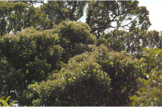
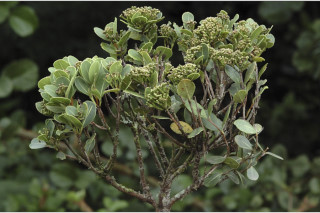
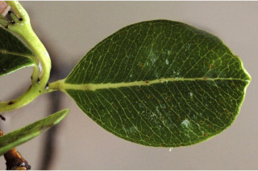
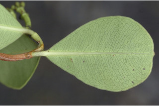
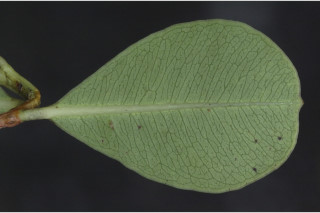
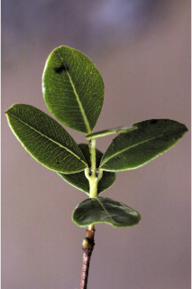
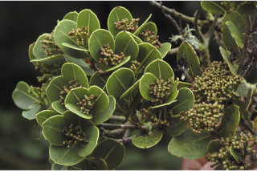
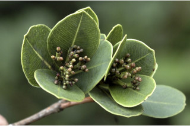
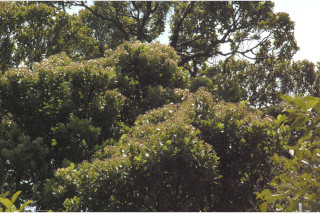
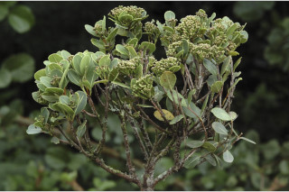
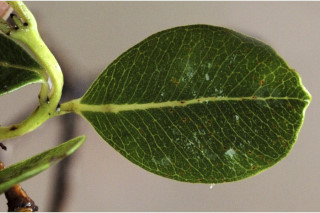
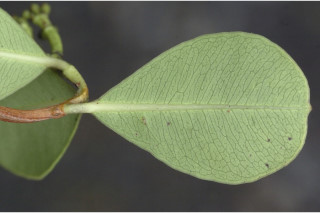
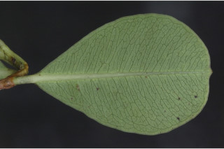
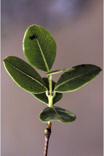
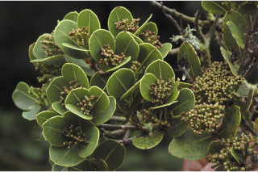
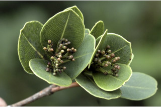